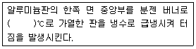
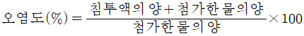
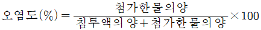
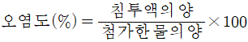
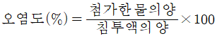

침투비파괴검사기사 (2017-05-07 기출문제)
1과목: 비파괴검사 개론
1. 재료 내부의 동적거동을 비파괴적으로 평가하는 시험은?
- 방사선투과시험
- 자분탐상시험
- 와전류탐상시험
- 음향방출시험
(정답률: 66%)

2. 방사선투과시험에서 현상액의 온도가 규격에 화씨(°F)로 되어 있어 섭씨온도로 변환시켜 측정된 값과 비교하고자 한다. 다음 중 화씨온도(°F)를 섭씨온도(℃)로 변환하는 식으로 옳은 것은?
- ℃=5/9×(°F-32)
- ℃=(°F×5/9)+32
- ℃=(°F×5/9)+460
- ℃=(°F×5/9)+270
(정답률: 80%)
3. 자분탐상시험과 비교한 침투탐상시험의 특징으로 틀린 것은?
- 조작 단계가 독립적이며, 각각의 단계별 절차를 지키는 것이 중요하다.
- 표면으로 열린 결함이라도 결함 안에 이물질로 채워져 있으면 검출하기 어렵다.
- 일반적으로 자분탐상시험은 시간이 경과하여도 지시모양이 변하지 않으나 침투탐상시험은 변한다.
- 자분탐상시험에 비해 침투탐상시험은 온도의 영향을 적게 받으므로 온도변화에 의한 탐상이 유리하다.
(정답률: 77%)
4. 다음 중 시험체의 박막 두께 측정에 이용되는 비파괴검사법은?
- 침투탐상시험
- 방사선투과시험
- 음량방출시험
- 와전류탐상시험
(정답률: 68%)
5. 초음파누설검사의 장점이 아닌 것은?
- 특별한 추적가스가 필요치 않다.
- 잡음신호가 발생될 때에도 검사가 가능하다.
- 누설 시 음파가 발생하면 어떤 유체에도 사용이 가능하다.
- 대기 중으로 누설이 존재하여 음파를 발생할 때 측정이 가능하다.
(정답률: 70%)
6. 황동의 가공재에서 발생하는 자연균열(season cracking)을 방지하기 위한 방법이 아닌 것은?
- 응력제거풀림을 실시한다.
- 암모니아 분위기에서 일정시간 유지시켜 준다.
- 도료를 도포하거나 혹은 아연도금을 행한다.
- (α+β)황동 및 β황동에는 Sn을 첨가하거나 1~1.5%의 Si을 첨가한다.
(정답률: 70%)
7. 인장시험에서 비례한도내의 응력(σ)=변형(ε) 곡선으로부터 얻어지는 탄성률(young's modulus) E의 관계식으로 옳은 것은?
- ε/σ
- σ/ε
- ε:σ
- ε2/σ
(정답률: 47%)
8. 스테인리스강의 조직에 따른 분류가 아닌 것은?
- 페라이트형
- 시멘타이트형
- 마텐자이트형
- 석출경화형(PH계)
(정답률: 53%)
9. 열팽창 계수가 대단히 작아 바이메탈에 사용되는 인바(Invar)는 철(Fe)에 Ni이 어느 정도 함유되어 있는가?
- 17%
- 23%
- 36%
- 47%
(정답률: 53%)
10. 합금강에 첨가되는 합금원소의 효과를 설명한 것 중 틀린 것은?
- Ni는 내산성을 증가시킨다.
- Mo는 뜨임 메짐을 조장한다.
- Mn은 적열 메짐을 방지한다.
- W는 함유량이 많아지면 탄화물 생성을 용이하게 한다.
(정답률: 56%)
11. 철강 재료의 내마모성을 향상시키기 위한 방안으로 옳은 것은?
- 탄소의 함량을 낮게 한다.
- 내부 조직을 조대화 한다.
- 담금질 한 후 풀림처리 한다.
- 표면에 Cr, B 등을 침투시킨다.
(정답률: 56%)
12. 회철에 대한 일반적인 특성으로 틀린 것은?
- 상온에서 소성변형이 용이하다.
- 강에 비해 연신율이 작다.
- 주조성이 양호하다.
- 메짐성이 있다.
(정답률: 62%)
13. 마그네슘합금에 첨가되어 결정립 미세화 효과를 잘 나타내는 합금 원소는?
- Th
- Be
- Ca
- Zr
(정답률: 37%)
14. 실루민에 Cu, Ni, Mg 등을 첨가하여 내열성이 우수하고 열팽창이 적어 피스톤 재료에 널리 쓰이는 Al 합금은?
- 라우탈
- 로우엑스
- 스텔라이트
- 하이드로날륨
(정답률: 54%)
15. 금속 분말의 유동성에 영향을 미치는 인자가 아닌 것은?
- 분말의 조직
- 분말의 수분 함량
- 분말의 입도 및 형상
- 분말과 용기 사이의 마찰 계수
(정답률: 44%)
16. 아크 쏠림의 방지 대책으로 틀린 것은?
- 접지점 2개를 연결한다.
- 접지점을 용접부에서 멀리한다.
- 아크 길이를 길게 하여 용접한다.
- 용접봉 끝을 아크 쏠림 반대 방향으로 기울인다.
(정답률: 78%)
17. 용접 후 변형을 교정하기 위한 방법이 아닌 것은?
- 피닝법
- 역변형법
- 형재에 대한 직선 수축법
- 얇은 판에 대한 점 수축법
(정답률: 69%)
18. 아크 용접기의 1차측 입력이 20kVA인 경우 가장 적합한 퓨즈의 용량은? (단, 이 용접기의 전원전압은 200V이다.)
- 100A
- 120A
- 150A
- 200A
(정답률: 83%)
19. 불활성 가스 텅스텐 아크 용접에서 주로 사용되는 보호 가스는?
- 수소
- 메탄
- 아르곤
- 아세틸렌
(정답률: 75%)
20. 일명 비석법이라고도 하며, 용접 길이를 짧게 나누어 간격을 두면서 용접하는 방법으로 다른 용착법에 비해 잔류응력이 적게 발생시키는 용착법은?
- 전진법
- 스킵법
- 덧살 올림법
- 캐스케이드법
(정답률: 74%)
2과목: 침투탐상검사 원리
21. 기계가공된 연성의 시험체를 침투탐상검사하기 전에 스미어(Smear)된 부위를 제거할 수 있는 가장 효과적인 방법은 무엇인가?
- 에칭
- 숏 피닝
- 브러싱
- 수세척
(정답률: 60%)
22. 침투탐상검사용 현상제가 갖추어야 할 일반적인 특성이 아닌 것은?
- 침투액을 분산시키는 능력이 좋아야 한다.
- 형광 침투액을 사용할 경우 자외선에 의해 형광을 잘 발산해야 한다.
- 습식 현상제의 경우 현탁성이 좋아야 한다.
- 시험표면에 대한 부착성이 좋고 현상막의 제거가 쉬워야 한다.
(정답률: 53%)
23. 침투액이 결함 내부로 침투되는 성질과 가장 관계가 깊은 용어는?
- 높은 점도
- 적심성
- 화학적 불활성
- 비중
(정답률: 74%)
24. 침투탐상검사 시 전기 공급이 어렵고, 수도장치도 없다면 어떤 방법이 가장 유리한가?
- 용제제거성 형광침투탐상검사
- 용제제거성 염색침투탐상검사
- 후유화성 형광침투탐상검사
- 후유화성 염색침투탐상검사
(정답률: 83%)
25. 침투탐상검사에서 침투제의 침투속도에 가장 크게 영향을 미치는 물리적 특성의 조합은?
- 표면장력과 점성
- 점성과 휘발성
- 휘발성과 인화성
- 적심성과 휘발성
(정답률: 84%)
26. 침투탐상검사에서 “수세성 형광침투액-무현상법”의 절차순서로 맞는 것은?
- 전처리-침투처리-세척처리-건조처리-관찰-후처리
- 전처리-침투처리-제거처리-현상처리-관찰-후처리
- 전처리-침투처리-세척처리-건조처리-현상처리-관찰-후처리
- 전처리-침투처리-세척처리-현상처리-관찰-후처리
(정답률: 73%)
27. 후유화성 염색-에서 솔질법으로 유화제를 적용하는 방법은 금기로 되어 있는데 그 주된 이유는?
- 관찰 시 솔질 자국이 나타나기 때문
- 솔질법 자체는 좋으나 솔과 유화제가 반응하여 생성된 물질이 표면을 오염시키기 때문
- 유화제의 피막 형성이 원만하지 못하여 안전한 세척을 할 수 없기 때문
- 유화제가 침투제에 섞이게 되어 유화시간의 조정을 어렵게 해주기 때문
(정답률: 50%)
28. 일반적으로 강 용접부에 침투탐상검사에서 나타나기 어려운 결함은?
- 언더컷
- 용접부 균열
- 슬래그 혼입
- 크레이터 균열
(정답률: 52%)
29. 다음 중 시판되고 있는 일반적인 침투제의 비중으로 옳은 것은?
- 0.5 이하
- 1.0 이하
- 1.5 이하
- 2.0 이하
(정답률: 73%)
30. 침투탐상검사에서 현상제 적용에 관한 설명 중 가장 적절한 것은?
- 염색침투제를 사용하는 경우에는 일반적으로 건식현상제는 적용하지 않는다.
- 건식현상제의 부착력이 너무 강하면 자외선 등 아래에서 형광의 밝기가 너무 강해질 수 있다.
- 수세성침투제를 사용하는 경우에 수용성 습식현상제를 사용하면 검출감도가 높아진다.
- 형광침투제를 사용하는 경우 건식현상제를 적용하면 감도가 가장 높아진다.
(정답률: 53%)
31. 침투탐상검사에서 액체의 침투성에 가장 적게 영향을 미치는 요소는?
- 밀도
- 점성
- 표면장력
- 접촉각
(정답률: 71%)
32. 자외선조사등 이용에 관한 설명으로 옳지 않는 것은?
- 자외선 필터는 검사에 적절한 파장의 자외선을 통과 시킨다.
- 일반광선은 눈에 해를 주게 되므로 일정한 간격으로 휴식을 취하여야 한다.
- 주변의 일반광선이 들어오지 않도록 암실에서 검사한다.
- 지시(Indication)는 황록색을 나타내므로 식별이 쉽다.
(정답률: 62%)
33. 다음 중 건식 현상법에 대한 설명으로 옳은 것은?
- 담조품의 침투탐상검사에 적합한 방법이다.
- 나사부 및 키 홈 등 복잡한 형상의 소형 주조품의 침투탐상검사에 이용할 수 있다.
- 대형 부품의 침투탐상검사에 적용하기 쉬운방법이다.
- 대형 구조물의 용접부 등의 침투탐상검사에 가장 적합한 방법이다.
(정답률: 46%)
34. 침투탐상검사에 사용되는 자외선 조사장치가 갖추어야 할 조건이 아닌 것은?
- 필터 내외면, 고압 수은등, 조사등 내부를 간단히 청소할 수 있는 구조이어야 한다.
- 자외선의 파장 범위가 안정된 것이어야 한다.
- 장시간 사용에 견딜 수 있는 것어어야 한다.
- 자외선의 조사범위가 좁은 것이어야 한다.
(정답률: 88%)
35. 다음은 침투탐상검사에 사용되는 알루미늄 비교시험편의 제조방법을 설명한 것이다. ()안에 적합한 온도범위는?

- 300~330℃
- 410~430℃
- 510~530℃
- 600~630℃
(정답률: 73%)
36. 침투탐상검사는 눈으로 관찰할 수 없는 미세한 균열 등의 지시모양을 나타낸다. 이 지시모양을 형성시키는 현상으로 가장 올바른 것은?
- 흡인력과 모세관 현상
- 표면장력과 점성
- 적심과 표면장력
- 적심과 모세관 현상
(정답률: 62%)
37. 형광 침투탐상검사에서 형광을 발하는 피막의 두께를 측정하는 방법으로 올바른 것은?
- 침전관
- 모세관 점도계
- 메니스커스
- 비색계
(정답률: 67%)
38. 침투탐상검사에서 침투에 영향을 미치는 요인이 아닌 것은?
- 침투액의 접촉각
- 침투액의 적심성
- 침투액의 색깔
- 침투액의 표면장력
(정답률: 83%)
39. 침투액에 함유된 유황(S) 성분은 어떤 시험체에는 유해하다고 하는데 그 이유로서 다음 중 해당되는 것은?
- 시험체 표면을 피로시키기 때문이다.
- 고온에서 시험체의 표면에 균열을 발생시키기 때문이다.
- 알루미늄 표면에 산화피막을 형성시키기 때문이다.
- 형광염료를 사용하는 경우 형광 휘도를 저하시키기 때문이다.
(정답률: 40%)
40. 침투탐상재료를 선정하기 위한 조건이 아닌 것은?
- 결함의 특성
- 검사위치 및 시간
- 검사자의 자질
- 요구되는 결함 검출감도
(정답률: 82%)
3과목: 침투탐상검사 시험
41. 기체 방사성동위원소를 이용한 침투탐상시험 방법 중 크립톤 85를 이용하면 어떤 방사선의 방사로부터 필름이 감광되는가?
- 알파선
- 감마선
- 베타선
- 중성자선
(정답률: 31%)
42. 모든 조건이 같을 때 다음 결함 중 가장 긴 침투시간이 필요한 것은?
- 주조품의 갈라짐(crack)
- 압출품의 겹침(lap)
- 용접부의 융합불량(lack of fusion)
- 주조품의 쇳물경계(cold shut)
(정답률: 72%)
43. 수세성 침투액에 대한 물의 오염을 측정하는 계산식으로 옳은 것은?




(정답률: 66%)
44. 수세성 침투제를 사용하여 알루미늄 주조품을 시험할 경우 최소 침투시간은?
- 1분
- 5분
- 10분
- 15분
(정답률: 71%)
45. 현상제 첨가물질의 화학성분 중 무기산화물로서 현상제 분말로 사용되지 않는 것은?
- SiO2
- MgCO3
- Al2O3
- Mg2SO4
(정답률: 42%)
46. 침투탐상검사의 특징으로 옳은 것은?
- 결함내부의 형상, 크기를 파악을 할 수 있다.
- 인접결함 또는 근접결함을 분리된 지시모양으로 확연히 구분할 수 있다.
- 금속 및 비금속재료의 결함유무, 위치를 개략적으로 파악할 수 있다.
- 결함폭의 확대율이 높으므로 실제결함 형상과 같은 지시를 얻는다.
(정답률: 74%)
47. 침투탐상검사에서 결함의 관찰 중 주의하여야 하는 의사지시의 원인이 아닌 것은?
- 리벳이음부 나사산의 지시
- 표면에 붙은 산화 스케일
- 기계적 불연속 지시
- 다공성 재료의 지시
(정답률: 54%)
48. 후유화성 형광침투탐상검사에서 침투액의 세척처리 시 적용하는 수압으로 옳은 것은?
- 0.5~1kgf/cm2
- 1.0~1.5kgf/cm2
- 2~3kgf/cm2
- 3.5~4.5kgf/cm2
(정답률: 50%)
49. 시험체에 존재하는 불연속으로부터 나타나는 판독 및 평가의 대상이 되는 지시를 뜻하는 용어는?
- 의사 모영
- 관련지시
- 무관련지시
- 유사결함
(정답률: 74%)
50. 침투탐상검사에 적용하는 참상제 중 침투액이 결함속으로 침투하는 침투력에 영향을 미치는 원인이 아닌 것은?
- 침투액의 표면장력
- 침투액의 적심성
- 탐상면의 청결도
- 침투액의 점성
(정답률: 54%)
51. 나사나 홈 등의 각이 날카로운 부분을 침투탐상검사를 하고자 할 때 선택해야 할 검사방법은?
- 수세성 형광침투탐상검사
- 후유화성 형광침투탐상검사
- 용제제거성 형광침투탐상검사
- 용제제거성 염색침투탐상검사
(정답률: 69%)
52. 침투탐상시험에 사용되는 침투액이 갖고 있어야 하는 중요한 성질로 틀린 것은?
- 유동성이 있어야 한다.
- 점성이 낮아야 한다.
- 휘발성이 높아야 한다.
- 적심성이 좋아야 한다.
(정답률: 65%)
53. 서로 섞이지 않는 액체의 한 쪽이 작은 입작사 되어 다른 쪽의 액체 속에 분산되어 있는 상태를 말하는 것은?
- 점성
- 유화
- 휘발성
- 적심성
(정답률: 73%)
54. 침투탐상검사의 전처리 방법 중 화학적방법이 아닌 것은?
- 알칼리 세척
- 산 세척
- 염기성 세척
- 증기 세척
(정답률: 75%)
55. 침투탐상검사에서 고감도 형광침투액을 사용할 때 적용할 수 있으나 염색침투탐상에는 적용하지 않는 현상법은?
- 무현상법
- 건식현상법
- 습식현상법
- 속건식현상법
(정답률: 52%)
56. 속건식 현상제에 혼합하여 사용하는 백색의 미세 분말로 옳지 않은 것은?
- 산화마그네슘
- 산화규소
- 산화칼슘
- 산화티타늄
(정답률: 43%)
57. 침투탐상시험에서 사용되는 현상법 중 용제제거성 염색침투탐상시험과 조합시켜 많이 사용되며 휘발성이 높은 것은?
- 건식 현상법
- 습식 현상법
- 속건식 현상법
- 무 현상법
(정답률: 57%)
58. 알루미늄 재질로 생산한 제품을 침투탐상검사할 때 침투 시간을 가장 길게 하여야 하는 결함은?
- 용접부의 균열
- 단조품의 균열
- 용접부의 융합불량
- 수조품의 쇳물경계
(정답률: 68%)
59. 후유화성 형광침투액의 피로 점검 항목 중 불필요한 것은?
- 감도
- 부식성
- 수세성
- 수분함유량
(정답률: 41%)
60. 결함의 분류에서 “사용 중 생성되는 결함”은?
- 랩(Lap)
- 기공(Porosity)
- 피로균열(Fatigue Crack)
- 용입부족(Lack of Penetration)
(정답률: 77%)
4과목: 침투탐상검사 규격
61. 보일러 및 압력용기에 대한 침투탐상검사(ASME Sec.V Art.24 SE-165)에 따른 수세성 침투탐상에서 잉여 침투액을 제거할 때에 수압은?
- 185kPa dlgk
- 275kPa dlgk
- 350kPa dlgk
- 450kPa dlgk
(정답률: 65%)
62. 침투탐상 시험방법 및 지시모양의 분류(KS B 0816)에 의한 결함의 분류에서 독립 결함 중 선상 결함은 갈라짐 이외의 결함으로서 나비가 2mm일 경우 길이가 얼마 이상인 것을 의미하는가?
- 1mm
- 2mm
- 4mm
- 6mm
(정답률: 69%)
63. ASME Sec. Ⅷ Div.Ⅰ에서 선형결함과 비교할 때에 원형 결함을 어떻게 규정하고 있는가?
- 결함길이와 폭이 같을 때만 원형결함으로 규정
- 결함길이가 폭의 4배 미만일 때에 원형결함으로 규정
- 결함길이가 폭의 3배 미만일 때에 원형결함으로 규정
- 결함길이가 폭의 2배 미만일 때에 원형결함으로 규정
(정답률: 68%)
64. 보일러 및 압력용기에 대한 침투탐상검사(ASME Sec.V Art.6)에서 침투탐상시험 시험기록 사항이 아닌 것은?
- 침투액 종류
- 재료 및 두께
- 사용된 조명기구
- 사용된 통풍장치
(정답률: 78%)
65. 보일러 및 압력용기에 대한 침투탐상검사(ASME Sec.V Art.6)에서 규정한 수세성 과잉침투제 제거용 물의 온도로 적합한 것은?
- 100°F
- 130°F
- 160°F
- 190°F
(정답률: 57%)
66. 침투탐상 시험방법 및 지시모양의 분류(KS B 0816)에서 시험 기록에 해당되지 않는 것은?
- 시험체
- 조작조건
- 조작방법
- 지시모양의 합부판정
(정답률: 71%)
67. 보일러 및 압력용기에 대한 침투탐상검사(ASME Sec.V Art.6)에서 용접부위를 탐상할 때 전처리 과정에서 용접부위와 인접 경계면은 적어도 몇 cm 이내에 있는 오물, 그리스, 녹 등을 제거하도록 규정하고 있는가?
- 1.3cm
- 2.5cm
- 5.8cm
- 11.6cm
(정답률: 72%)
68. 보일러 및 압력용기에 대한 침투탐상검사(ASME Sec.V Art.24 SE-165)에 따라 압출강판에서 주로 발견될 수 있는 불연속은?
- 겹침
- 텅스텐 혼입
- 콜드셧
- 융합 불량
(정답률: 69%)
69. 침투탐상 시험방법 및 지시모양의 분류(KS B 0816)에서 후유화성 침투액을 스프레이 노즐로 세척할 때에 올바른 것은?
- 기름을 275kPa 압력 이하에서 사용한다.
- 기름을 275kPa 압력 이상에서 사용한다.
- 물을 275kPa 압력 이하에서 사용한다.
- 물을 275kPa 압력 이상에서 사용한다.
(정답률: 75%)
70. 보일러 및 압력용기에 대한 침투탐상검사(ASME Sec.V Art.6)에서 염색침투탐상을 할 경우에 지시를 관찰하기에 적당한 조도는 최소 몇 lx인가?
- 200
- 800
- 1000
- 2000
(정답률: 64%)
71. 침투탐상시험방법 및 침투지시 모양의 분류(KS B 0816)에서 예비세척처리가 필요한 시험방법은?
- 수세성 형광침투액-건식 현상법
- 수세성 형광침투액-습식 현상법(수현탁성)
- 후유화성 형광 침투액(기름베이스 유화제)-건식 현상법
- 후유화성 형광 침투액(물베이스 유화제)-습식 현상법(수현탁성)
(정답률: 58%)
72. 침투탐상시험방법 및 침투지시 모양의 분류(KS B 0816)에 규정된 일반적인 시험을 위한 조작순서로 옳은 것은?
- 침투액의 적용→현상제의 적용→잉여침투액의 제거→관찰→기록
- 현상제의 적용→잉여침투액의 제거→침투액의 적용→관찰→기록
- 잉여침투액의 제거→침투액의 적용→현상제의 적용→기록→관찰
- 침투액의 적용→잉여팀투액의 제거→현상제의 적용→관찰→기록
(정답률: 81%)
73. 침투탐상시험방법 및 침투지시 모양의 분류(KS B 0816)에 따라 지시모양의 분류를 할 때, 거의 동일선상에 각각 3, 4, 5mm의 길이를 갖고있는 선상지시가 관찰되어 그 지시의 간격을 측정하였더니 2mm씩 이었다면 올바른 지시모양 분류는?
- 3개의 선상지시로 길이는 각각으로 분류한다.
- 3개의 분산지시로 하되 길이는 12mm로 하여 분류한다.
- 1개의 선상지시로 하되 길이는 12mm로 하여 분류한다.
- 1개의 선상지시로 하되 길이는 16mm로 하여 분류한다.
(정답률: 74%)
74. 침투탐상시험방법 및 침투지시 모양의 분류(KS B 0816)에 따른 침투 지시 모양의 기록에 포함되지 않는 것은?
- 지시 모양의 종류
- 지시의 길이
- 지시의 개수
- 지시의 면적
(정답률: 78%)
75. 보일러 및 압력용기에 대한 침투탐상검사(ASME Sec.V Art.6)에 따라 형광침투액을 사용하는 경우 관찰장치로서 반드시 설치하여야 하는 경우 관찰장치로서 반드시 설치하여야 하는 것은?
- 자장지시계
- 광전 형광계
- 자외선조사장치
- 시험체의 표면온도를 측정하기 위한 온도계
(정답률: 85%)
76. 침투탐상시험방법 및 침투지시 모양의 분류(KS B 0816)에 따라 전수검사를 한 경우 합격된 시험체에 표시를 필요로 하는 경우의 표시 방법의 설명으로 틀린 것은?
- P자를 각인한다.
- 황색으로 착색한다.
- P자를 부식한다.
- 적갈색으로 착색한다.
(정답률: 75%)
77. 보일러 및 압력용기에 대한 침투탐상검사(ASME Sec.V Art.6)에서 과잉의 수세성 침투제를 물 분사기로 제거할 때 수압과 수온으로 적당한 것은?
- 수압은 250kPa, 수온은 40℃를 초과할 수 없다.
- 수압은 350kPa, 수온은 43℃를 초과할 수 없다.
- 수압은 350kPa, 수온은 46℃를 초과할 수 없다.
- 수압은 450kPa, 수온은 49℃를 초과할 수 없다.
(정답률: 52%)
78. 침투탐상시험방법 및 침투지시 모양의 분류(KS B 0816)에 따라 독립 침투지시모양으로 분류되지 않는 것은?
- 갈라짐에 의한 침투지시모양
- 선상 침투지시모양
- 원형상 침투지시모양
- 분산 침투지시모양
(정답률: 52%)
79. 침투탐상시험방법 및 침투지시 모양의 분류(KS B 0816)에 따른 시험방법의 분류 요건이 아닌 것은?
- 침투액의 종류
- 잉여 침투액의 제거방법
- 건조 방법
- 현상 방법
(정답률: 50%)
80. 침투탐상시험방법 및 침투지시 모양의 분류(KS B 0816)에 따른 침투 지시 모양 및 결합의 분류에 관한 사항 중 틀린 것은?
- 침투 지시 모양은 크게 독립, 연속, 분산 침투 지시 모양으로 분류한다.
- 독립 침투 지시 모양은 갈라짐, 선상, 원형상 침투 지시 모양으로 분류한다.
- 결함은 침투 지시 모양을 제거하고 시험체 표면에 나타난 흠을 관찰하여 치수를 측정기록한다.
- 침투 지시 모양을 제거하고 육안으로 관찰한 결과 시험체 표면에 결함이 없다면 의사지사로 판정한다.
(정답률: 67%)